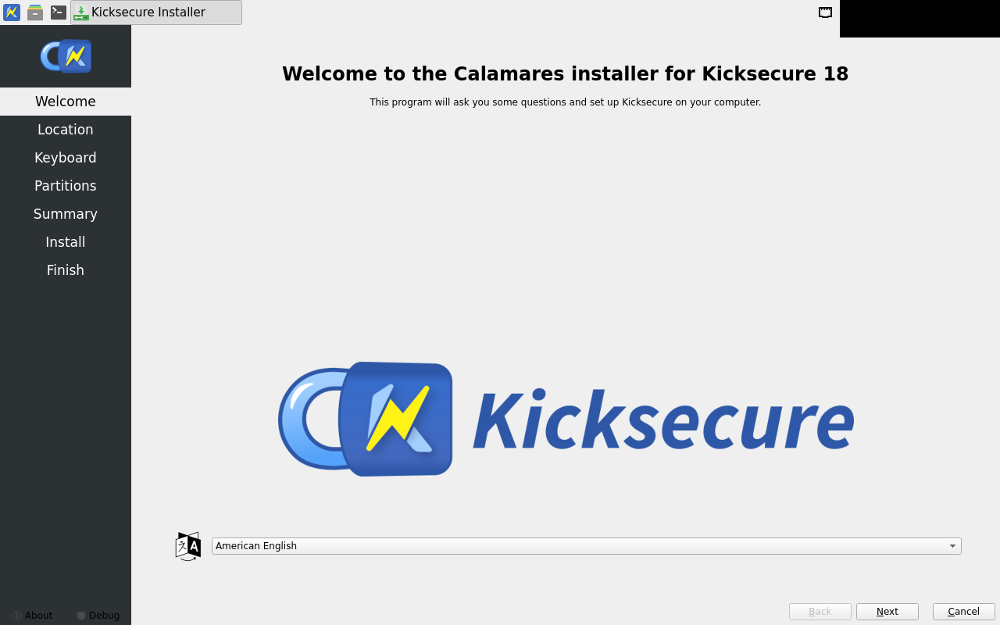
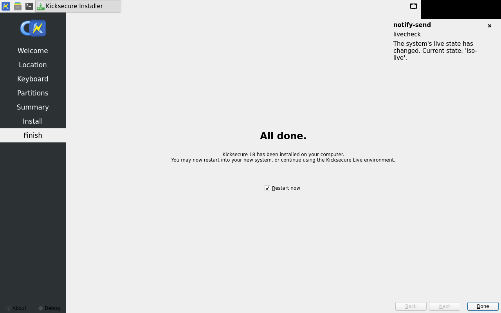

calamares-install fail
exit 5
check 8 (systemcheck) FAILED:
/usr/libexec/systemcheck/systemcheck: WARNING: privleapd is not reachable on socket '/run/privleapd/comm/1000'. Cannot use privleap.
/usr/libexec/systemcheck/systemcheck: WARNING: privleapd is not reachable on socket '/run/privleapd/comm/1000'. Cannot use privleap.
/usr/libexec/systemcheck/systemcheck: WARNING: privleapd is not reachable on socket '/run/privleapd/comm/1000'. Cannot use privleap.
[WARNING] [systemcheck] systemd journal check result: Could not read the systemd journal (read failed with exit code 1).
Some journal-based checks could not be completed, so this is NOT a clean result. A denied privilege (privleap), a broken journalctl, or a corrupted journal can cause this. Any messages still detected are shown below.
/usr/libexec/systemcheck/systemcheck: WARNING: privleapd is not reachable on socket '/run/privleapd/comm/1000'. Cannot use privleap.
[ERROR] [systemcheck] Tor Connection Result:
Cannot query Tor's status.
systemcheck reads Tor's bootstrap and circuit state via privleap
(leaprun), but privleap is not usable for this account, so whether
Tor is connected cannot be determined. This is NOT the same as Tor being down.
Details: /usr/libexec/systemcheck/systemcheck: WARNING: privleapd is not reachable on socket '/run/privleapd/comm/1000'. Cannot use privleap.
fail welcome — no approved golden yet

fail partitions — no approved golden yet

fail summary — no approved golden yet

fail install-done — no approved golden yet

fail first-boot — no approved golden yet